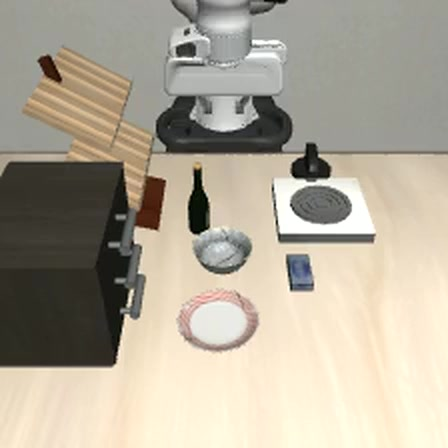
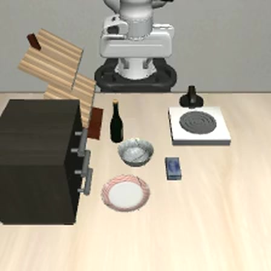
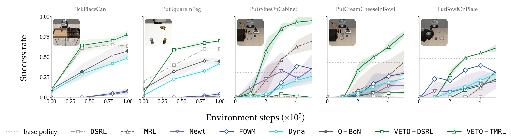
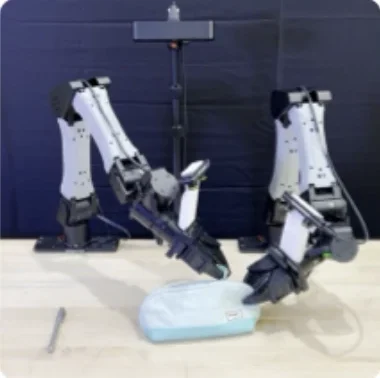
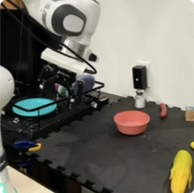
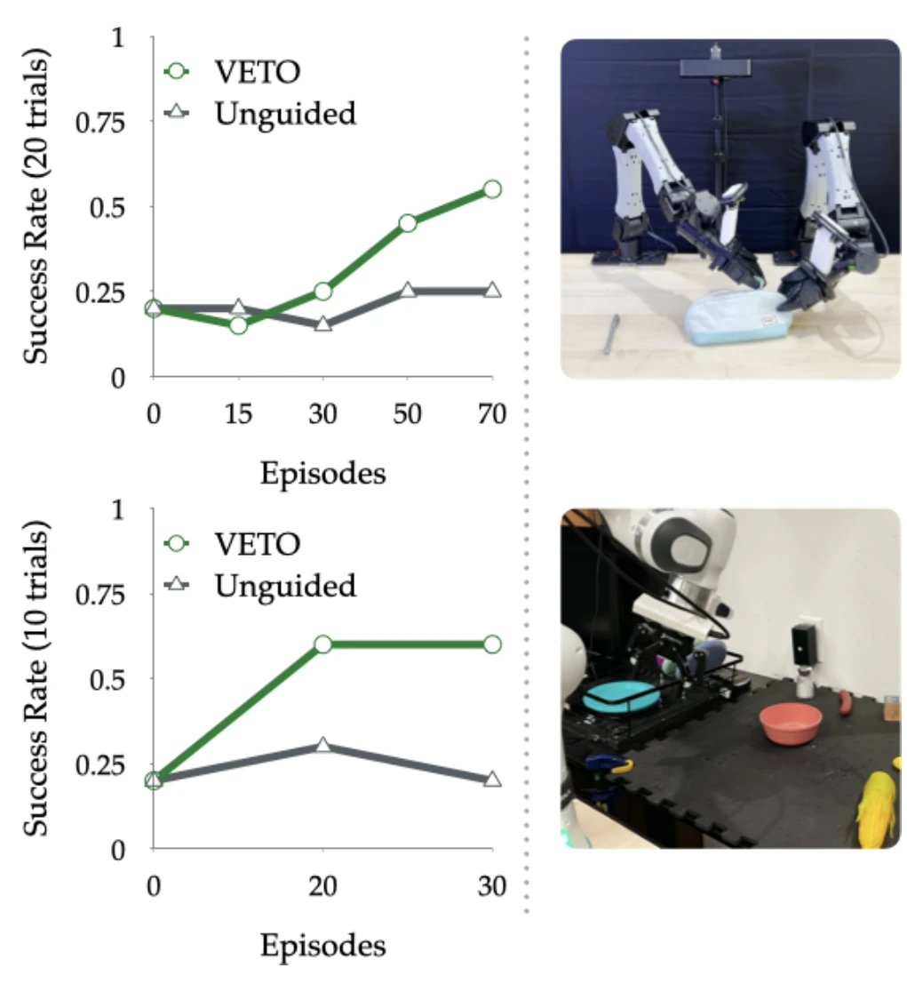

RL keeps repeating a mistake. A TD critic learns too slowly to stop it; VETO stops it after one try.
Unguided
Ranked by a TD critic
Ranked by VETO
Unguided, the policy changes only as fast as RL retrains it: a failure has to pass through a TD critic and then the policy gradient before behavior changes, which the paper calls credit-assignment lag. Ranking the policy's proposals with the TD critic skips the second step, but a TD critic learns an action's value from the values of what follows it, so the news that the dead end fails still travels back slowly. VETO's world model learns rewards directly, from a reward model watching each try, so one failure is enough to recognize the move and veto it.
After 256 transitions, VETO recovers 87% of the best possible gain; a TD critic recovers 4.7%
The same comparison, measured on PointMaze. Each verifier is trained on the same transitions, ranks 16 candidate chunks and keeps its top 4, and one of the four runs. The chart shows how much more return that pick earns than unguided exploration, a uniform pick from all 16. Q-TD is the TD critic.
The chart data did not load. See Fig. 4 in the paper.
Better rankings early, then faster RL
In simulation, VETO sits on top of two noise-space RL methods, DSRL and TMRL, which steer a frozen flow policy. Rewards come from the simulator on Robomimic and from a video reward model on LIBERO.


- DSRL
- VETO-DSRL
- TMRL
- VETO-TMRL
- Base policy

About 2.5× the success of unguided collection on real robots
The real-robot runs use iterative behavior cloning on the flow noise of large frozen policies (DSBC): collect episodes, refit a small noise policy on the successes, repeat. With and without VETO, everything else is the same.
Bimanual YAM: unzip a pencil case, put a pen in, zip it
The base policy is Flex-π, a 6B world-action model. After 10 warmup episodes, each strategy collects 60 more, with rewards from Robometer.
Franka (DROID): take a bowl out of a dish rack
The base policy is π0. It often grabs the rack or a nearby object instead of the bowl and starts at 20% success. After 10 warmup episodes, each strategy collects 20 more.



Watch the action rankings change as data arrives
The same PointMaze state and 16 candidate action chunks, scored by three verifiers trained on increasing amounts of data. The paths stay fixed. The highlighted lines are each verifier's top four; the star is the goal.
VETO
Reward-supervised world model
Q-TD
TD critic
H-return
Direct return predictor
The interactive figure is unavailable. Download the recorded data and standalone preview.
Data and provenance
This is an illustrative scene, not an aggregate result or a recording of one model training continuously. The 4,096-example fit was selected as the first tested prefix where all three methods chose the true top four. The export includes all 14 available fits through 5,096 examples. Recorded scores and paths · Source archive and standalone preview.
Cite
@misc{peri2026veto,
title = {VETO: Reward-Supervised World Models as Action Verifiers for Sample-Efficient RL},
author = {Peri, Skand and Hong, Matthew M and Zhang, Chaoxiang and Worobel, Ross and Shivakumar, Suraj and Fox, Dieter and Zhang, Jesse and Gupta, Abhishek},
year = {2026},
note = {Submitted to ICLR 2027}
}